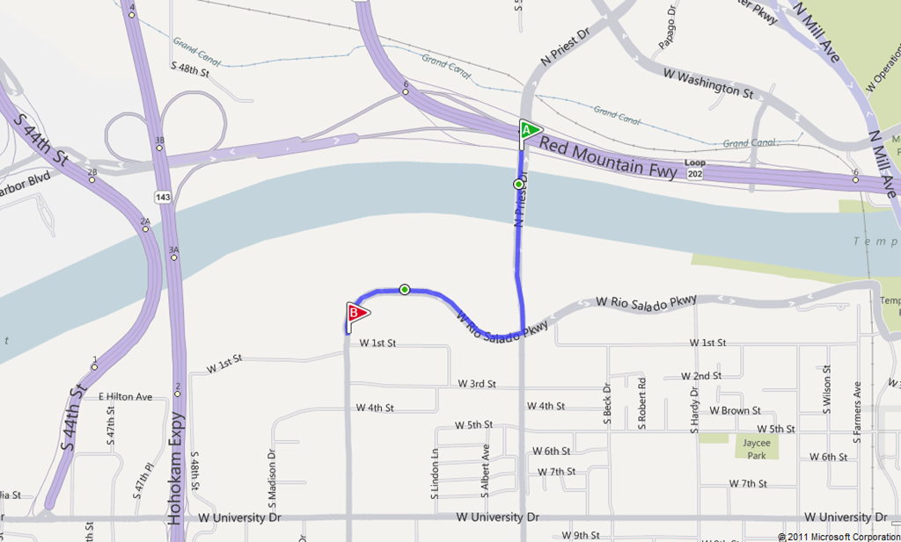
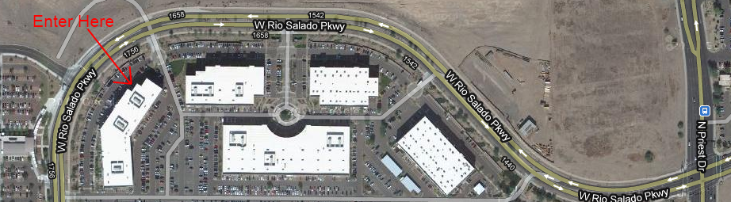

Tag: event
Event Storming
Posted by bsstahl on 2021-09-21 and Filed Under: development
What is Event Storming?
Event storming is a process for building a model of a problem domain by analyzing the domain from a business perspective. The results of an Event Storming session include a logical model of the domain, as seen by the business owners, that is extremely useful to engineers in defining software systems for that domain. Event Storming follows a four-step process to produce a model of the system that is based on Domain Events, historical facts about the business process that are relevant to the business owners.
The process occurs on a whiteboard surface, ideally in-person but often virtually. Sticky-notes of various colors are used to represent elements of the domain and the model is built-up by everyone on the team, regardless of their role. The exercise starts as a brainstorming session of a sort, then evolves until it results in a model of the business process.
The Goals of Event Storming
Produce a model of the domain that is valuable to both the business owners and the engineers who are building software systems for that domain.
Document a Ubiquitous Language for the domain that represents the shared set of terms used by everyone working in that domain.
Level everyone in the domain on the same understanding of what problems are being solved so that all players have a strong working background.
Important Terminology
Note: The items below represent the different elements of the model we wish to produce. Each type of item is represented by a different color of sticky-note on our design surface. Terms not color-coded exist in the context of Domain Driven Design and may be used during the session, but will not be modeled on the board.
Aggregate
An aggregate is a cluster of domain objects that can be treated as a single unit. An example may be an order and its line-items. These objects will likely be created from distinct classes when built within the context of a software system, but it is useful to treat them as a single aggregate for the purposes of modeling the domain. That is, it is simpler to think about an Order with all of its line-items as a single unit within the model. Additionally, some objects will be able to be viewed from multiple perspectives. If we model a User which contains a collection of Roles, we could also see a Role as having a collection of users. The User and Role objects are each separate aggregates and can be modeled separately depending on the context, even though they represent the same relationship and a collection of one object likely exists on the other. The primary object within each Aggregate is known as the Aggregate Root which is used to describe the aggregate as a whole.
Bounded Context
A Bounded Context is a logical area within a system where business processes are implemented, a ubiquitous language is applied, and certain terms make very clear and specific sense. A term can have exactly one meaning within a bounded context, a meaning which may not be exactly the same as that same term in another bounded context. As an example, let's look at a Customer object. Bounded Contexts that exist in a state after a user has logged-in to the system might have a User object or UserId property associated with it. Meanwhile, this User object or UserId may not exist in a Bounded Context that exists purely pre-login, or where login status has no bearing on the functionality.
Business Process (dark purple stickies)
The business rules and logic required to handle a Command or a Domain Event. A business process may create one or more domain events, or may reject the command outright.
Command (light blue stickies)
An instruction submitted by a user, usually through a view, that typically results in the creation of one or more Domain Events. Commands may be rejected by the Business Processes that handle them, perhaps due to permissions or data validation issues. If a command is rejected, it may or may not result in one or more domain events representing the submission and/or rejection of that command.
Domain Event (orange stickies)
Domain Events are the keys to Event Storming. A Domain Event is something that happened in the domain that is relevant to the business. Events are always written in the past tense since they represent historical facts that cannot change. Examples of domain events include “vehicle locked” and “delivery scheduled.” Though the term event is somewhat overloaded, these Domain Events should not be conflated with the messages that can be used to represent them. While many Domain Events will eventually be represented by event messages of some form, many will not. Event Storming is an implementation agnostic process, thus there is no prescription as to how events are communicated. Domain events, in this context, exist entirely as historical facts and nothing more.
External System (light purple stickies)
A third-party service provider such as a payment gateway or shipping company. These services may utilize View Models within our system and may create Domain Events that trigger Business Processes.
Questions or Risks (pink or red stickies)
We use pink stickies to identify items that are unclear, overly complex or have unanswered questions or risks. Callout concerns with these pink stickies liberally whenever there is something that should be known about an item or area of the model. Sections of the model where there are a lot of pink sticky notes may require additional attention.
Ubiquitous Language
A set of terms describing the domain that are meaningful to the business team. These are the terms that are used by all domain team members to identify and communicate about activities of the system. A sample excerpted from a Ubiquitous Language document is shown below.

User/Actor (yellow stickies)
A person who interacts with the system. These interactions will usually take the form of executing a Command, typically through a view populated by a View Model.
View / Read Model (light green stickies)
A presentation of data that Users, Business Processes, and External Systems interact with to carry out a task in the system. As an example, an external system may call a REST service within the domain that returns data that we represent with a View Model.
The Event Storming Process
Each step builds on the previous steps to result in a cohesive picture of the domain from a business perspective. This view of the system has proven to be extremely useful to engineers in defining software systems for that domain.
1 - Collect Domain Events
The first step in Event Storming is to brainstorm the Domain Events that occur during the course of the business process. These events should be described on orange sticky notes using verbs in the past-tense. Each sticky should represent a single event and should be placed on the modeling surface in roughly chronological order. Since this is brainstorming, we should limit the amount of time we spend discussing and refining each event. There will be more time for that in step 2. However, we do want to have enough discussion to trigger thoughts on additional events which often result from these conversations.
Any events where there are unresolved questions or concerns should be marked with a pink sticky note indicating the question or risk. In this first step we should make liberal use of these stickies.

2 - Refine Domain Events
Once we have thrown all of the events we can think of on the board, we can start to refine those events. In step 1 we were brainstorming so multiple side-conversations may have been occurring at various times. In step 2 we want to bring the entire team together in a single conversation about each event. This is where we drill-in to the details of the events, and modify our model as appropriate.
We begin by walking through the timeline, usually from left to right, but jumping around as needed to best navigate the domain. Each event should be discussed with all participants to be certain that the entire team understands the details of the event. Other things to discuss include whether or not the event is in the proper place on the timeline, if there are any additional events that may be related to the one being discussed, if any duplicate events should be combined, if any of the questions or risks identified in the pink stickies can be resolved, and if there are additional questions or concerns that should be called-out using pink stickies.
Finally, for each event, be certain that any important terms are documented in the Ubiquitous Language document and that we are not using synonyms of the documented terms to describe our events. We always want to use the correct terminology to describe all aspects of our domain.

3 - Track Causes
In step 3, things start to get really interesting. The goal of this step is to determine the causes of each of the Domain Events. There are three causes of domain events: User actions, Business Processes, and External Systems. For each event we need to identify the interactions surrounding it, including what triggers it, and what downstream events it may cause. This step, once completed, results in a model that looks like a series of flows.
User Actions
Users typically trigger events via View Models and Commands. A view model may be displayed to the user from which they issue a command to take an action. This command may directly result in a Domain Event, but is more likely to be consumed by a Business Process which may validate the command before either rejecting it or executing logic that results in a Domain Event.
Business Processes
Business Processes often produce one or more events during the execution of their logic. An example might be that when a question is answered by a user in a StackOverflow type Q & A domain, it results in a “Question Answered” event. This event may be consumed by a business process to notify subscribed users resulting in one or more “User Notified” events. Business Processes often make use of Read Models to provide additional information as to the state of the system.
External Systems
External Systems are business processes that exist outside of the domain, and as such, have a smaller surface with which to interact with our systems. These processes may utilize Read Models from within our domain to gather information and are usually modeled as creating Domain Events to interact with the system. These interactions are typically modeled as Domain Events because most external system events are seen as important historical facts to our business. After all, if they weren’t important to our business domain experts, why would our systems care about them at all? This is not a hard and fast rule however and your domain may differ. It is conceivable that external logic could issue Commands to internal systems, though it seems more reasonable that those would be viewed as Domain Events.

4 - Aggregation (Software Modeling)
The final step is all about grouping our new logic flows around the Aggregates they act upon and describing the communications between these newly identified sub-domains.
As you recall, an Aggregate is an object graph treated as a single object and identified by the Aggregate Root. In this step we identify the aggregates in our system, and then group each of the flows from step 3 by the Aggregate they act upon. At the same time, we can draw lines between the groups to identify the communications across these boundaries. This will result in the final model of this process, a set of flows grouped by their Aggregate into subdomains that can often be viewed as a good proxy for a microservice.

Additional Resources
- Intro to Event Storming - Lightning Talk Video
- Event Storming Presentation - Slide Deck
- Alberto Brandolini - Creator of Event Storming - On Why it Should be Done In-Person
- Adam Dymitruk on Event Modeling - a similar (more expansive) system
Conclusion
The practice of Event Storming offers a dynamic and inclusive approach to understanding and modeling business domains, bridging the gap between technical and non-technical stakeholders. By fostering collaboration, promoting a shared language, and visualizing the flow of Domain Events, teams can unlock a deeper comprehension of the business processes at hand. This method not only streamlines the development process but also ensures that the resulting software systems are precisely aligned with business objectives. As we've seen, Event Storming stands out as an invaluable tool in the arsenal of modern software development practices, embodying principles of agility, domain-driven design, and team cohesion to tackle complex domain problems effectively.
Tags: agile architecture coding-practices ddd event event-driven
South Florida Code Camp 2019
Posted by bsstahl on 2019-03-03 and Filed Under: event
Thanks again to all the organizers, speakers and attendees of the 2019 South Florida Code Camp. As always, it was an amazing and fun experience.
The slides for my presentation are online Intro to WebAssembly and Blazor and the Blazor Chutes & Ladders Simulation sample code can be found in my AIDemos GitHub Repo.
Tags: assembly blazor code camp code sample development framework introduction microsoft presentation
Three Awesome Months
Posted by bsstahl on 2019-02-26 and Filed Under: event
The next few months are going to be absolutely amazing. We've got some great events coming up in March and April right here in the Valley of the Sun. In addition, I currently have 4 conferences scheduled in 4 different countries on 2 continents.
AZGiveCamp IX - Presented by Quicken Loans - March 8th-10th
The most important occasion coming up is the 9th AZGiveCamp Hackathon of Help. This year, we're very fortunate to have Quicken Loans presenting our event and hosting it at their new facility in downtown Phoenix. At AZGiveCamp, Arizona's finest technologists will put their skills to work creating software for some great local charity organizations. We help them help our community by using our skills to create tools that help them further their mission.
Visual Studio 2019 Arizona Launch - April 16th
Another fun event for developers in the valley is the Visual Studio 2019 Arizona Launch event being hosted at Galvanize. We'll have some great speakers talking about how Visual Studio 2019 is a more productive, modern, and innovative environment for building software.
Around the World
In March, I'll be visiting opposite ends of the east coast of North America.
First, on March 2nd, I'll be attending the always amazing South Florida Code Camp in Fort Lauderdale. This event is right up there with the biggest community conferences in the country and is always worth attending. This will be the 7th year I've presented at SoFlaCC. If you're in the area I hope you'll attend.
Later in March, I cross the border into Canada to attend ConFoo Montreal. This will be my first trip ever to Montreal so I hope the March weather is kind to this 35 year Phoenix resident. The event runs from March 13th - 15th and there will be 2 Canadiens games during the time I am there so I should be able to get to at least one of them.
In May I get to do a short tour of Europe, spending 2 weeks at conferences in Budapest, Hungary (Craft Conference), and Marbella, Spain (J on the Beach). While I have done some traveling in Europe before, I have never been to Spain or Hungary so I am really looking forward to experiencing the history and culture that these two cities have to offer.
Keep up With Me
I maintain a list of my presentations, both past and upcoming, on the Community Speaker page of this blog. I also try to document my conference experiences @bsstahl. If you are going to be attending any of these events, please be sure to ping me and let me know.
Tags: azgivecamp charity code camp conference givecamp microsoft nonprofit phoenix presentation schedule speaking user group visual studio
SoCalCodeCamp Slide Decks
Posted by bsstahl on 2018-11-10 and Filed Under: event
The slide decks for my two talks at SoCalCodeCamp USC from November 10, 2018 are below.
- Intro to WebAssembly Using Blazor – SGM-124 at 1:30 pm
- Building .NET Applications for any Cloud with Cloud Foundry – GFS-207 at 4:00 pm
Thanks to all of the organizers and attendees of this always amazing event.
Tags: blazor cloud cloud foundry code camp community conference open source presentation slides speaking wasm webassembly
AZGiveCamp IX-Save the Date
Posted by bsstahl on 2018-10-31 and Filed Under: event
March 8th–10th 2019
_1.png)
Mark your calendars to block-out the weekend of March 8th 2019 for the next AZGiveCamp Hackathon-of-Help. More details will be coming very soon so keep an eye on AZGiveCamp.org and Meetup for all the particulars as soon as they are available. I’m looking forward to seeing you all at our 9th event, helping those who help our community.
Tags: azgivecamp charity community givecamp nonprofit phoenix
Intro to WebAssembly Using Blazor
Posted by bsstahl on 2018-09-26 and Filed Under: event
I will be speaking tonight, 9/26/2018 at the Northwest Valley .NET User Group and tomorrow, 9/27/2018 at the Southeast Valley .NET User Group. I will be speaking on the subject of WebAssembly. The talk will go into what WebAssembly programs look and act like, and how they run, then explore how we as .NET developers can write WebAssembly programs with Microsoft’s experimental platform, Blazor.
Want to run your .NET Standard code directly in the browser on the client-side without the need for transpilers or browser plug-ins? Well, now you can with WebAssembly and Blazor.
WebAssembly (WASM) is the W3C specification that will be used to provide the next generation of development tools for the web and beyond. Blazor is Microsoft's experiment that allows ASP.Net developers to create web pages that do much of the scripting work in C# using WASM.
Come join us as we explore the basics of WebAssembly and how WASM can be used to run existing C# code client side in the browser. You will walk away with an understanding of what WebAssembly and Blazor can do for you and how to immediately get started running your own .NET code in the browser.
The slide deck for these presentations can be found here IntroToWasmAndBlazor-201809.pdf.
Tags: apps community csharp framework html5 introduction microsoft presentation phoenix speaking user group ux wasm webassembly w3c
Desert Code Camp – October 2017
Posted by bsstahl on 2017-10-16 and Filed Under: event
Another great Desert Code Camp is in the books. A huge shout-out to all of the organizers, speakers & attendees for making the event so awesome.
I was privileged to be able to deliver two talks during this event:
A Developer’s Survey of AI Techniques: Artificial Intelligence is far more than just machine learning. There are a variety of tools and techniques that systems use to make rational decisions on our behalf. In this survey designed specifically for software developers, we explore a variety of these methods using demo code written in c#. You will leave with an understanding of the breadth of AI methodologies as well as when and how they might be used. You will also have a library of sample code available for reference.
- Code Samples: GitHub Repo
- Slide Deck: PDF
AI that can Reason "Why": One of the big problems with Artificial Intelligences is that while they are often able to give us the best possible solution to a problem, they are rarely able to reason about why that solution is the best. For those times where it is important to understand the why as well as the what, Hybrid AI systems can be used to get the best of both worlds. In this introduction to Hybrid AI systems, we'll design and build one such system that can solve a complex problem for us, and still provide information about why each decision was made so we can evaluate those decisions and learn from our AI's insights.
- Code Samples: GitHub Repo
- Slide Deck: PDF
Please feel free to contact me @bsstahl with any questions or comments on these or any of my presentations.
Tags: ai algorithms code camp code sample community conference optimization presentation professional development phoenix slides speaking
A Developer’s Survey of AI Techniques
Posted by bsstahl on 2017-06-22 and Filed Under: event
The slide deck for my talk “A Developer’s Survey of AI Techniques” can be found here, while the demo code can be found on GitHub.
The talk explores some of the different techniques used to create Artificial Intelligences using the example of a Chutes & Ladders game. Various AIs are developed using different strategies for playing a variant of the game, using different techniques for deciding where on the game board to move.
If you would like me to deliver this talk, or any of my talks, at your User Group or Conference, please contact me.
Tags: ai code sample community decision development presentation professional development slides speaking user group
Microservices Presentation
Posted by bsstahl on 2017-05-06 and Filed Under: event
The slide deck for my presentation “Examples of Microservice Architectures” can be found here.
There isn't one clear answer to the question "what does a micro-service architecture look like?" so it can be very enlightening to see some existing implementations. In this presentation, we will look at 2 different applications that would not traditionally be thought of as candidates for a service-oriented approach. We'll look at how they were implemented and what benefits the micro-services architecture brought to the table for each application.
Tags: coding-practices community conference development presentation services soa microservices
Demo Code for Testing in Visual Studio 2017
Posted by bsstahl on 2017-03-16 and Filed Under: event
The demo code for my presentation on Testing in Visual Studio 2017 at the VS2017 Launch event can be found on GitHub. There are 2 branches to this repository, the Main branch which holds the completed demo, and the DemoStart branch which holds the starting point of the demonstration in case you would like to implement the sample yourself.
The demo shows how Microsoft Fakes (formerly Moles) can be used to create tests against code that does not implement a reusable interface. This can be done without having to resort to integration style tests or writing extra wrapper code just to implement an interface. During my launch presentation, I also use this code to demonstrate the use of Intellitest (formerly Pex) to generate exploratory tests.
Tags: abstraction code sample coding-practices community conference development di interface microsoft moles mstest pex phoenix presentation tdd testing unit testing visual studio
A Busy October and November
Posted by bsstahl on 2016-10-05 and Filed Under: event
The next two months are packed with tons of great technical events that I am really looking forward to. Below are some of the events that I am involved with and will be attending between now and the end of November. I hope to run into you at these events. If you see me, please don’t hesitate to say “hi”. I do love to talk tech.
Desert Code Camp – Phoenix AZ – October 8th 2016
Desert Code Camp makes its triumphant return from hiatus this weekend at Chandler-Gilbert Community College in the south-east valley. I will be delivering my talk, “A Developer’s Guide to Finding Optimal Solutions” which is an introduction to combinatorial optimization designed specifically for software developers, at 9:45 am in room CHO-110.
IT/DevConnections – Las Vegas NV– October 10th-13th 2016
One of my favorite large conferences of the year is IT/DevConnections in Las Vegas. This year marks my 4th attendance at this event, the 2nd as a speaker. I will be delivering the talk, “Dynamic Optimization – One Algorithm All Programmers Should Know”, a programmer’s introduction to Dynamic Programming, at 2:15 pm on October 13th in Brislecone 2 at the Aria Resort.
Atlanta Code Camp – Atlanta GA – October 15th 2016
This year marks my 2nd attendance at the Atlanta Code Camp. My 1st experience there, last year when I presented on Dynamic Programming, was a big part of the inspiration for drilling deeper into the topic of combinatorial optimization. As such, I return to Atlanta this year with my new talk on the subject, “A Developer’s Guide to Finding Optimal Solutions”.
NWVDNUG & SEVDNUG – Phoenix AZ – Oct 26th and 27th
It is not yet confirmed as of this publication but I have a really great, internationally renown speaker lined-up for the Northwest Valley and Southeast Valley .NET User Groups this month. Final arrangements are currently being made so keep an eye on meetup.com for each group for the details to be published as soon as they are finalized.
SoCalCodeCamp – Los Angeles CA, November 12th – 13th 2016
I have attended many instances of the Southern California Code camp, but this will only be my 2nd time at the Los Angeles incarnation of this event. My 1st time there, last year, I was struck by the old-school beauty of the old school campus and facilities at USC when I presented my talk on Dynamic Programming. This year, I will follow that up with my new, more general overview on the subject of finding optimal solutions.
NWVDNUG & SEVDNUG – Phoenix AZ – Nov 16th and 17th
Our good friend Jeremy Clark (blog, twitter) makes his annual tour of the Valley’s .NET User Groups to talk to us, once again, about many of the things you need to know about .NET and Software Engineering to make your development better. Jeremy will give a different talk each night so be sure to sign-up at the meetup sites and come to both meetings.
Tags: community conference optimization phoenix professional development schedule
AZGiveCamp is Breaking the Mold
Posted by bsstahl on 2016-08-11 and Filed Under: event
The organizing team of AZGiveCamp recently announced that we would be hosting a one-day Hackathon for Humanitarian Toolbox on Saturday, August 27th, from 8:30 am to 5pm at Ticketmaster in Scottsdale, AZ. This event is a bit of a departure for us. We have been looking for ways to evolve the organization to host more and different coding-for-charity events while continuing our mission to to help charitable and non-profit organizations in our community meet their technology needs. We hope you’ll join us for this first experiment with other event types at AZGiveCamp.
AZGiveCamp’s flagship event is our Hackathon of Help. We have had the privilege of hosting 7 such events in the Valley of the Sun so far, with our 8th scheduled for March of 2017. These events take up an entire weekend and are designed to put multiple charity and non-profit organizations together with multiple development teams. The teams are tasked with taking a project from idea to completion in the course of one weekend. During these events, participants may chose to camp out at the event facility, stay up and work on their projects, or go home at night, returning to continue the project in the morning until the final turnover on Sunday afternoon. These events are technology agnostic, with the specific technologies to be used determined by the teams themselves.
By contrast, the AZGiveCamp Humanitarian Toolbox Hackathon will be only a 1-day event. Participants will work on a single project, the Humanitarian Toolbox (htBox) allReady project, for which the technologies, design, and many of the features have already been chosen and implemented. We will be lending our support to this worthy organization by adding features, upgrading tooling, and writing tests against the existing code base. This event will not be judged by how many projects we complete, but by how much better-off the project is when we are done.
For those not familiar with Humanitarian Toolbox, they are an organization that sets up projects to assist humanitarian organizations. Their current project, dubbed allReady, is designed to organize the preparedness campaigns of the Red Cross and other disaster response groups. The project is implemented in ASP.NET Core MVC with a Cordova client. Participants need to have at least a basic comfort level with one or both of these technologies, along with the appropriate development tools, to be an effective contributor to this project. Specifics of the required tools can be found on the event page on Meetup.
We hope you’ll join us at this and future AZGiveCamp events.
Tags: azgivecamp aspdotnet charity community givecamp ionic nonprofit open source phoenix visual studio apache cordova
Dynamic Optimization Presentation
Posted by bsstahl on 2015-10-21 and Filed Under: event
I hope you’ve had an opportunity to see my presentation, “Dynamic Optimization – One Technique all Programmers Should Know” at a Code Camp or User Group near you. If so, and you want to have a copy of the slide deck for your very own, you can see it embedded below, or use the direct link to the Powerpoint here.
The subject of this presentation is using a technique called Dynamic Programming to solve problems that have more than one possible solution. This technique works very well when used to solve problems that are recursive in nature. One of the best things about this technique is that it guarantees that the solution it produces is the best possible solution.
We look at three examples during the presentation, the first is done only “on paper” and is an example of using this technique to solve a knapsack problem. The second example is done in pseudo-code and solves a linear best-path problem in the game of Chutes & Ladders. Finally, we drop into Visual Studio to solve a 2-dimensional best-path problem. Sample code for both of the last 2 examples can be found in GitHub.
Keep an eye on my Speaking Engagements Page for opportunities to see this presentation live. If you are a user group or conference organizer, you can contact me to schedule an in-person presentation. This presentation is a lot of fun to deliver and has been received extremely well at Code Camps and User Groups across the country.
Tags: algorithms code camp code sample community conference development dynamic skill visual studio
Speaking Engagements for October 2015
Posted by bsstahl on 2015-09-30 and Filed Under: event
I am really looking forward to October because I have 3 awesome events that I’ll be speaking, and learning, at:
- The first event for the month is Code Camp NYC in Manhattan on October 10th. I have attending this event once before and loved it. I’m really looking forward to being there again.
- Next up is Atlanta Code Camp on October 24th. This will be my 1st time at this event, and my 1st time in Atlanta in many years. Hopefully, people will have some helpful suggestions for what to see and do when I am not at the Code Camp.
- Finally, I’ll be speaking at .NET Group – Southern Nevada’s .NET User Group in Las Vegas on October 29th. I’ve spoken in Las Vegas at the Code Camp there before, but have never had the privilege of attending their user group.
I have several other event possibilities in the works for November and beyond. I’ll announce them here periodically, but you can always see my schedule, as well as past events and the talks I am currently giving, using the “Speaking Engagements” link above.
Tags: event code camp user group speaking presentation
SOA–Beyond the Buzzwords
Posted by bsstahl on 2014-06-28 and Filed Under: event development
For those who saw my code camp presentation, “SOA – Beyond the Buzzwords”, you can find the slide deck here.
There is much more to building a Service Oriented Architecture than just creating services. SOA services can be much more difficult to build, requiring more analysis and design work up-front than a non-service-enabled system or a system that relies on CRUD-style data services. In this session, we will look at real-world examples of SOAs, examining what a good SOA might look like, what conditions present a good opportunity to use a Service Oriented Architecture, and how we can make the process more agile. We will also look at some practical tips to help make your services more extensible and maintainable.
For those who haven’t yet seen this presentation, I will be giving this session at several other code camps and user groups around the US between now and the end of the year. Keep an eye on my Speaking Engagements page to know where and when I will be presenting.
Tags: soa services presentation slides code camp
Upcoming Presentations
Posted by bsstahl on 2013-02-06 and Filed Under: event
Here is an update on where and when I’ll be delivering presentations about software development in .NET over the next few months. I still have some availability left for the H1 2013 and H2 is effectively wide open. You can request me as a speaker by Contacting Me.
Southern Most User Group in Key West FL on February 7th - “Code Portability in .NET”
South Florida Code Camp in Ft. Lauderdale FL on February 9th - “Building a DSL Using an OData Source”
Desert Code Camp on April 20th in Gilbert AZ – “Building a DSL Using an OData Source”
Twin Cities Code Camp in Minneapolis MN on April 27th – “Code Portability in .NET”
SELA Dev Conference in Tel-Aviv Israel on May 5-9 – a full day seminar version of “.NET TDD Kickstart” as well as “Code Portability in .NET”
CodeStock in Knoxville TN on July 12-13 “Code Portability in .NET” (assuming the attendees vote for my session)
I hope to see you at one or more of these events.
Tags: event
Code Sample for My TDD Kickstart Sessions
Posted by bsstahl on 2012-02-13 and Filed Under: development
The complete, working application for my .NET TDD Kickstart sessions can be found here.
Unzip the files into a solution folder and open the Demo.sln solution in a version of Visual Studio 2010 that has Unit Testing capability (Professional, Premium or Ultimate). Immediately, you should be able to compile the whole solution, and successfully execute the tests in the Bss.QueueMonitor.Test and Bss.Timing.Test libraries.
To get the tests in the other two test libraries (Bss.QueueMonitor.Data.EF.Test & Bss.QueueMonitor.IntegrationTest) to pass, you will need to create the database used to store the monitored data in the data-tier and integration tests, and enable MSMQ on your system so that a queue to be monitored can be created for the Integration test.
The solution is configured to use a SQLExpress database called TDDDemo. You can use any name or SQL implementation you like, you’ll just need to update the configuration of all of the test libraries to use the new connection. The script to execute in the new database to create the table needed to run the tests can be found in the Bss.QueueMonitor.Data.EF library and is called QueueDepthModel.edmx.sql.
You can install Message Queuing on computers running Windows 7 by using Programs and Features in the Control Panel. You do not need to create any specific queue because the integration test creates a queue for each test individually, then deletes the queue when the test is complete.
If you have any questions or comments about this sample, please start a conversation in the Fediverse @bsstahl or Contact Me.
Tags: abstraction agile assert code camp coding-practices community conference csharp development di event framework ioc tdd testing unit testing visual studio
.NET TDD Kickstart
Posted by bsstahl on 2012-01-26 and Filed Under: event development
I head out to Fullerton tomorrow for the start of my .NET TDD Kickstart world tour. 
In this session, the speaker and the audience will "pair up" for a coding session which will serve as an introduction to Test Driven Development in an Agile environment. We will use C#, Visual Studio and Rhino Mocks to unit test code to be built both with and without dependencies. We will also highlight some of the common issues encountered during TDD and discuss strategies for overcoming them.
I will be presenting this session at numerous venues around the country this year, including, so far:
- Southern California Code Camp – Fullerton in January
- South Florida Code Camp – Ft. Lauderdale in February
- New Mexico .NET User’s Group – Albuquerque in March
- Twin Cities Code Camp – Minneapolis in April
If you are interested in having me present this or another session at your event, please contact me.
There is much more than an hour’s worth of material to be presented, so instead of trying to rush through everything I want to talk about during this time, I’ve instead taken some questions from this presentation and posted them below. Please contact me if you have any additional questions, need clarification, or if you have an suggestions or additions to these lists.
Update: I have moved the FAQ list here to allow it to be maintained separately from this post.
Tags: abstraction agile assert code camp coding-practices community conference csharp development di event framework ioc tdd testing unit testing visual studio
AZGiveCamp III is Oct 21st-23rd
Posted by bsstahl on 2011-10-12 and Filed Under: event
It's AZGiveCamp time again! Our third event is coming up in under 2 weeks, Oct 21st-23rd 2011 at the Park Central Mall (Central Ave. between Thomas and Osborn) in midtown Phoenix. Please sign-up to volunteer as a developer, designer, or analyst on our Meetup Page or see AZGiveCamp.org for more details.
Special appeal: we need graphic designers! If you’re a pro or amateur, it doesn’t matter. Designers are always the most popular people at any GiveCamp!
Those who participated in the last 2 events already know that AZGiveCamp is the local component of a national event where the software development community comes together to support local charities and non-profits by developing or improving their web sites and applications. It's fun, it's agile, it's geeky, and it's good for the community.
We had a fantastic time at the last 2 events and, in Arizona alone, have helped more than 20 non-profits with their development needs. As someone who has now participated in GiveCamps as both a participant and as an organizer, I can honestly say the experience is very, very, worthwhile.
You can find out more about AZGiveCamp at https://www.azgivecamp.org and about the national organization at https://givecamp.org.
I am very excited about this event and look forward to working with all of you at AZGiveCamp III.
Tags: charity community event givecamp nonprofit azgivecamp
Why I Am Attending the Pluralsight “Algorithms and Data Structures” Webcast
Posted by bsstahl on 2011-08-24 and Filed Under: event development
When I started at Arizona State University (ASU) about twenty-six years ago, I’d already been programming for five or six years, and building applications for a year or two. I’d done things like create hacking tools and WarGames dialers for my own use, and I’d built a few applications for businesses where I was doing lookups and filing information that was specific to that business, but all of that was very heavy on code and light on technique and reusability. I knew how to use variables and arrays, I knew how to make the computer do what I wanted it to do, but I didn’t know how to write good code. At ASU, there were two classes that I had take freshman year that were part of the Engineering & Applied Sciences core, that really woke me up to the world of Computer Science and the things that we, as engineers, can do with our code. Those classes were “Data Structures in Pascal” and “Discreet Mathematics”. These two classes are really the only classes where I have specific memories of the things I learned so long ago.
I remember, very clearly, in the data structures class, learning about linked-lists. I remember the realm of possibilities that I saw when introduced to this data structure. This really very simple data structure showed me tremendous power as a flexible, reusable foundational element, that dwarfed arrays and the other tools I knew at the time. Linked lists showed me how I could hold the same values as I held in an array with addition metadata that gave me the tools to access the values in a different way, in a way that made more sense for the use-case. I saw in these structures a tool I could use to build reusable frameworks that could operate on data in a way that was much more use-case specific. For example, I could use linked-lists to create a queue structure. Then, if the use-case dictated, I could extend that structure to hold a priority and make the queue priority based. These things, while possible just using flat arrays, were much more difficult and harder to reuse. Other structures like binary-trees had impact on me as well, but nothing like the fundamental power of the linked-list.
I remember, in the discreet math class, learning about algorithms that were, in effect, practical uses of math for programmers. Although that class was not officially geared towards programmers, it was very easy to see why it was a core requirement for the College of Engineering & Applied Sciences. I remember learning about various sorting algorithms and encryption methods, optimum path algorithms and best-fit criteria. Basically, I learned ways of applying mathematics to everyday problems I faced when writing code. As with the data structures class, my horizons were significantly expanded by this knowledge and I have used these tools, and my understanding of these tools, to some degree every day since.
For me, making the decision that I wanted to be a software engineer, as opposed to a hardware engineer, didn’t occur until after I started college. The two classes I have described, had a big impact on proving to me that my talent, and my passion, was for software and that programming was the path that I wanted to take in life.
Now, I see an opportunity, 26 years later, to refresh my memory and update my skills on some of these topics. There have been many changes in software engineering since my time in college. The .NET Framework now provides many of the foundational structures I use daily, and, with the help of generics, those structures will often work in a strongly-typed way on any data type I choose. These topics helped establish the course of my career and I am looking forward to seeing how the tools, and the use of these tools, has changed over time. While I realize that I cannot recreate the “eureka experience” of my original awakening, and that you cannot squeeze 2 full-semester classes into a 1-hour presentation, I am still very excited about attending the Pluralsight webcast on Algorithms and Data Structures tomorrow.
Tags: algorithms data structures encryption event skill pluralsight
Wiffle Ball for Charity
Posted by bsstahl on 2011-06-28 and Filed Under: event
On a personal note, I’ve signed-up to play in the Reggie Sanders Foundation’s Wiffle Ball tournament which is part of the MLB All Star Weekend. The event is being held at Salt River Fields at Talking Stick on Saturday morning, July 9th at 9am. On hand will be former MLB players and other celebrities and the event is to benefit the Southwest Autism Research and Resource Center (SARRC). If you are interested in playing, sponsoring, or attending, please contact John Zackery at (602) 421-3479 or by email at jzackery (at) gmail (dot) com.
Tags: charity event
Annual Scott Guthrie Day in the Valley
Posted by bsstahl on 2011-04-06 and Filed Under: event
I am very excited to once again be attending the annual Day of ScottGu in Arizona. If you haven't been to this event before, you need to sign up right now (below). Those who have been to previous events are probably already signed-up. For more information, see the text below the signup form or the AZGroups website.
It's here again - Mr. Scott Guthrie is coming back to Arizona. And this year we're bringing special A-LIST guest, Mark Russinovich. Scott is a Vice President at Microsoft in charge of the Web Stack (ASP.net + Silverlight + a bunch of other stuff) Scott has made a special visit to the Arizona.net User Group since 2003 and is committed to the Arizona.net community as long as we can continue to support the event (in attendance).
ScottGu runs a bunch of business product lines inside Microsoft, most revolving around the Web Stack. This included ASP.net Web Forms, MVC, NuGet, Silverlight, and I'm sure a bunch of other things that aren't even public (hint hint).
So What Will ScottGu be demo'ing? Answer: I don't know. Scott says it will be magical like always, but at this moment, I'm not sure what he's going to be talking about.
But maybe that's even a better schedule to have. In years past, I have literally had to rush Mr. Scott Guthrie off the stage, which seems silly. Silly in that we wait all year for him to show up, and then don't give him the time he wants. So this year we're having less sponsored stage time, and more Scott Guthrie Time. (insert hoops and hollars here).
Tags: microsoft event professional development
Desert Code Camp Presentation
Posted by bsstahl on 2011-04-02 and Filed Under: event development
Thanks to all of the organizers, speakers, sponsors and attendees of Desert Code Camp 2011.1. This is the first time that I’ve presented at a Code Camp and it was a fantastic experience for me. My session, Building Enterprise Apps using Entity Framework 4, was very well attended with 35 people cramming, standing-room-only, into a room with a capacity of 28 (please don’t tell the Fire Marshall). The demos went very well (everything worked as it was supposed to) and the feedback I’ve gotten so far was entirely positive.
I will be posting some additional information from the session shortly, including the sample code and the changes I make to the Microsoft All Rules code analysis ruleset, but I wanted to get the session slides up as quickly as possible.
If you have any additional feedback on the session, please feel free to contact me here, in the Fediverse @bsstahl or by email as shown in the slide deck.
DCC 2011.1 -- Building Enterprise Apps using Entity Framework 4
Tags: abstraction agile coding-practices community conference encapsulation entity entity framework event provider unit testing us airways pluralsight
AZGiveCamp III Organization Starts 3/3
Posted by bsstahl on 2011-02-23 and Filed Under: event
At 6pm on March 3rd we will begin the journey toward our third AZGiveCamp event. If you are interested in being a part of the team that organizes this event, please come by the US Airways Rio West offices at 52nd St. and Rio Salado Parkway in Tempe (not the Corporate office on Mill - directions below) as we kick-off our next event planning. Existing teams will need additional members and some new teams will be forming. All types of help is needed, from financial and logistical planners to website, social media and other technical talents, so please come-by at 6pm and become part of this amazing team of volunteers.
If you are not familiar with AZGiveCamp a GiveCamp is a weekend event where the software development community comes together to support charities and non-profits by developing or improving their web sites and applications. These events have been occurring all over the United States for about 4 years now, and we have had 2 such events in the Valley of the Sun over the last year.
To get to the US Airways Rio West offices, take the Priest Dr. exit off the 202 (flag A) and head south. Make a right turn onto Rio Salado Parkway, and follow the road to where it starts to curve south (becoming 52nd St.). You want to turn left at the last entrance into the parking lot before the traffic light. If you reach the traffic light, you’ve gone too far, although you will be able to see the light from the parking lot entrance. Make an immediate right in the parking lot and park anywhere along this side of the building, which is numbered 2021. Enter at the first set of doors (the most northern doors on the west side of the building) labeled “Suite 101” and “US Airways Main Entry”. You’ll be able to see the tower at Sky Harbor airport if you look to the west and there will probably be airplanes landing just over your head.
If you have any trouble finding the meeting location, please call me and I will do my best to guide you in.


Tags: givecamp azgivecamp
South Florida Code Camp 2011
Posted by bsstahl on 2011-02-13 and Filed Under: event
For the 2nd time in the last 3 years, I was lucky enough to be able to attend the South Florida Code Camp. Code Camps are free, community driven technical conferences that take place during off-hours, usually weekends, so I try to make it to as many of them as I can. I have attended most of our local (Arizona) Desert Code Camp events, and will be speaking at the upcoming Desert Code Camp in April 2011, but I also try to attend other code camps whenever possible to get the broadest range of speakers and experiences. If you haven’t been to the local code camp in your area, you are missing out on a lot of great technical content and opportunities to chat with some awesome technologists.
I was able to attend a session in each of the 6 time slots for South Florida Code Camp 2011. I’d like to thank the speakers for all of the sessions as each was useful and worth attending:
- Zachary Gramana - Custom Tooling Using a VS Add-In and T4 Templates
- Colin Blakey – Building OData/WCF Data Service Providers
- Bayer White - Hosting Workflows as WCF Services Through Windows Server AppFabric
- Olec Sych – ASP.Net Dynamic Data
- Woody Pewitt – Technical Debt
- Chris Eargle – Code Like a Ninja: Enhance Productivity with Visual Studio and Just Code
Three of these sessions deserve some special mention. The OData/WCF session was probably the most useful from a technical perspective as the demos gave specific examples of exactly what I’d need to do to implement the technology. The session on technical debt was the most useful overall, Woody from ComponentOne, who is always a fantastic speaker, gave some specific tools to use to calculate the costs of carrying technical debt. In fact, I was fortunate enough to come-away from the raffle with a license to ComponentOne’s Studio Enterprise product. I’m especially looking forward to trying out the Silverlight controls. Finally, in the last session of the day, which turned into a free-form Visual Studio tips session, Chris did a great job of going with the flow and giving the already rowdy crowd, exactly what they wanted, including demos of some of the coolest features of Just Code.
All of the speakers and organizers did a fantastic job and it was a great event. Hopefully I will be able to make it back for next year’s event.
Tags: event code camp
Looking for Evening Events at Mix11
Posted by bsstahl on 2011-01-30 and Filed Under: event
I won’t be an attendee at the Mix conference this year. Nothing against this conference; it is usually fantastic and I have met many awesome people there. This year, my focus is elsewhere, on SOA and Middleware/Back-End technologies. Not that I’ve ever really been a front-end guy mind you, but I am of the opinion that balance is a good thing and since I consider myself weaker in front-end (UX) technologies, Mix has been a good learning experience for me in the past. However, as I said, this year, my primary focuses are elsewhere.
Not being an attendee doesn’t stop me from wanting to meet with old friends and continue the awesome technical discussions that go on at these events. I have loved meeting with the product teams in the past, both to learn from them and to provide my input into the future directions of the products. So, it is my intent to fly up to Las Vegas (it is less than an hour flight from Phoenix) for at lease 1 evening of the Mix conference, perhaps 2. Right now, I am looking for events to schedule for that (those) evening(s).
I know that I will not be able to go to the attendee party, since I will not be an attendee, and that event occurs on Wednesday the 13th (courtesy of Joe Guadagno’s Mix 11 Events site). This means that the most likely evenings for me to be there are Monday and Tuesday, April 11th and 12th. Do you know of any events going on in Las Vegas during this time that would be awesome for me as a .NET Software Engineer to attend? If so, I would appreciate it if you would let me know. I’ve setup a special email alias just for this purpose, please contact me at bss_MixEvents@bsstahl.com.
Tags: conference dotnet
AZGiveCamp II Announced!
Posted by bsstahl on 2010-10-21 and Filed Under: event
The next AZGiveCamp will be held starting January 14th 2011 at the Phoenix campus of Devry University! Please see AZGiveCamp.org for more details.
Tags: charity givecamp event nonprofit
Dev Ignite
Posted by bsstahl on 2009-11-09 and Filed Under: event
I just submitted my slide deck for my Developer Ignite #2 presentation on AZGiveCamp. I welcome any comments or suggestions.
Tags: event ignite slides
Tentative AZGiveCamp Organizers Meeting Agenda
Posted by bsstahl on 2009-10-14 and Filed Under: event
The 1st AZGiveCamp organizers meeting will be held on Thursday, October 15th from 6-8pm MST at the Microsoft Phoenix Offices (2929 N. Central Ave. #1400 Phoenix AZ 85012). If you are interested in helping to organize this event, please sign-up on EventBrite. To learn more about Give Camp, you can visit https://givecamp.org and follow us on Twitter @AZGiveCamp. You can even call us at 623.252.GIVE if you have questions.
The preliminary agenda for our first meeting is as follows. If you have any comments or suggestions on this agenda, please make them by commenting on this post, via Twitter, or by phone above.
- Introduction by Gary Hoffman
- Welcome Call-to-order, welcome & introduce Chris Koenig
- Opening Remarks from Chris Koenig Brief introduction to GiveCamp and call-to-action.
- Purpose of meeting Let everyone know why we are here
- Brief update and agenda review Give brief update on where we are, and review the agenda
- Around the room for introductions Who are you? What were you hoping to bring to GiveCamp?
- Updates from Barry
- Review preliminary schedule We are targeting February for the event, but we need to develop a more detailed schedule.
- Status of GiveCamp national Review of GiveCamp national, and what they have going on. Make everyone is aware of the regular conference call, legal structure, etc.
- Update on status so far Review the work already accomplished including known sponsors (Microsoft, etc), proposed standards, and relationships with other Camps.
- Venue status Review why we think venue is such a big deal, and where we stand.
- Technology update Review where we are on azgivecamp.org, etc.
- Organizers’ Team Housekeeping from Gary
- Propose team structure and vote Review proposed team structure and open for discussion, better ideas, and settle on what we want to do.
- Discuss Executive Committee nomination process Solicit volunteers via email and produce ballot for next meeting.
- Team volunteers Get volunteers for teams.
- Action Items from Barry
- Review open issues Share the list of open issues.
- Gather new issues Solicit new issues.
- Assign issues to team leads Assign the issues we can to the team leads.
- Set next Organizers’ meeting Set date/time for next Organizers’ meeting. Encourage team leads to set their own meetings and keep the Organizers Team updated.
Tags: givecamp charity nonprofit azgivecamp
Developer Ignite Presentation - Slide Deck
Posted by bsstahl on 2009-07-23 and Filed Under: event
Here is the slide deck for my Developer Ignite presentation, "Simplicity Through Abstraction".
Tags: event ignite slides
Developer Ignite in Chandler
Posted by bsstahl on 2009-07-13 and Filed Under: event development
I will be speaking at the Developer Ignite event in Chandler on July 22nd. The topic of my talk will be "Simplicity Through Abstraction" during which I will be giving a very high-level overview of using Dependency Injection as an Inversion-of-Control methodology to create simplicity in software architecture.
While putting my presentation together I have found a number of items that I wanted to include in my presentation, but simply can't due to the obvious constraints of a 5-minute presentation. Some of these items won't even get a mention, others will be mentioned only in passing. I include them here as a list of topics for me to discuss in future posts to this blog. Hopefully this will occur, at least in part, prior to the ignite event so that there will be a set of resources available to those at the event who were previously unfamiliar with these techniques and wish to explore them further.
These topics include:
- IoC Containers
- Dealing with Provider-Specific requirements
- Configuration as a dependency
- Local providers for external dependencies
- Providers as application tiers
- Testing at the provider level
- Top Down Design [Added: 7/12/2009]
If you have a topic that you are particularly interested in, or have any questions about IoC, Dependency Injection, or Providers that you would like me to answer, please use the comments or contact me @bsstahl.
Tags: ignite di ioc abstraction indirection interface tdd
Presentation Proposal - Developer Ignite Phoenix
Posted by bsstahl on 2009-06-26 and Filed Under: event
I just submitted the following proposal for a talk at Developer Ignite Phoenix which will be held July 22, 2009 at Gangplank in Chandler.
Simplicity Through Abstraction
The goal of this presentation is to explore, at a very high level, one methodology for software developers and architects to create software that is simple and maintainable, and thus has a lower total-cost-of-ownership (TCO).
Using abstraction via the provider pattern allows us to create software that is more testable, easier to map (find the piece of code that does X), and easier to understand at a component level. We can use providers to develop systems that have fewer bugs, and are more maintainable then tightly-coupled systems. As a result, these abstractions can significantly reduce costs for most systems, especially in the area of system maintenance.
I look forward to seeing you there.
Tags: abstraction event ignite
Best of PDC Phoenix in Tweets
Posted by bsstahl on 2008-12-14 and Filed Under: event development
Joe Guadagno has posted his summary of The Best of PDC in PHX. This was a great event and I want to make sure those who put it together, spoke, and sponsored it know we are tremendously appreciative of their efforts. This includes: Joseph Guadagno, Scott Cate and Rob Bagby as well as Microsoft, Robert Half Technology, TekSystems and GoDaddy.
I think that the best summary I can give of my experience at this event is through the tweets I sent in real-time while there. Below, are what I think are my tweets most representative of the experience.
At first I hated that C# didn't have optional params. Now I know that life is better w/o them. Sorry C# 4.0.
Wells Fargo Center has much more comfy chairs than most conference centers #PDCPHX
"...and I say 'thingey' in the most technical way possible." - Rob Bagby #phxpdc
Did Rob Bagby just invoke Don Box? #phxpdc
XBox at the bottom of the hierarchy of needs Rob? #phxpdc
I don't envy @scottcate having to follow Rob Bagby at #phxpdc
Rob Bagby on Intellisense: "I just got nerdly goosebumps". #phxpdc
Notepad!!! #phxpdc
To the non-dev-geek members of my family: no I will not stfu about #phxpdc
I always feel so dirty after demos involving json. #phxpdc
Tunneling an HTTP Put through a Post seems like a massive cluge. #phxpdc
W00t, I finally got @stupiderr on Twitter!
Declarative programming, what a concept... #phxpdc
Rob Bagby is weakening on his anti-Twitter stance. Hit him now while his defenses are down. Resistance is Futile. #phxpdc
"automagically" is a word whose time has come and gone.
It's important for me to know what's available in the Ajax world, but I have no desire to live there anymore. Silverlight FTW!
OK, let's talk Silverlight! #phxpdc
@stupiderr "genie blink"? I am so uncool!
Azure Party Planning Services now live! #phxpdc
Rob Bagby can give presentations on the same topic 2 days in a row that are totally different and both awesome. #phxpdc
#phxpdc Crowd reference to "Hailstorm". Nicely done sir.
Imo the best example of cloud service bus at PDC was in the Don Box/Chris Anderson keynote. #phxpdc
He already said, "you don't need schema"... #phxpdc
First "Animal House" reference of the day goes to Rob. #phxpdc
I don't like the SOAP API for SDS right now. SQL string queries are so 1990s. #phxpdc
Using Linq to project query results into a POCO is awesome. #phxpdc
@steeleprice it means CLR Obj to me. That Linq trick should work in VB too. But then again, I'll always be VB at heart.
@scottcate, @jguadagno, and Rob were all amazing today! Great event! Thank you all!
Tags: pdc phoenix development csharp event social-media
PDC 2008 - Day 2
Posted by bsstahl on 2008-11-01 and Filed Under: event development
Day 2 was a more focused day for me at PDC 2008. After attending the morning keynotes, which included the first peeks at Windows 7 features as well as a terrific (as always) code-only presentation on programming against the cloud by Don Box and Chris Anderson, I headed over to the hands-on-labs where I spent the rest of the day working with Azure and creating applications that run in the cloud. I also received my Azure key and began the process of setting up a virtual machine to house the Azure tools.
Real-Time Updates on Social Media
Just a reminder that much of what is happening here at the PDC is being posted in real-time (or close to it) on social media. My updates can now be found @bsstahl.
Keynotes
Day 2 keynotes focused on the client side of Windows development. Not surprisingly, this included Windows 7 and WPF development improvements as well as Silverlight and ASP.NET development. Some things that caught my attention in the keynotes included features of Windows 7 like its ability to "live" on a domain, but still participate in a "Home Group" when your work laptop is brought home. Multi-monitor support also looks to be vastly improved including the ability to work multi-monitor in a remote desktop session. Scott Guthrie also introduced a number of new controls and tools for developing applications in WPF and Silverlight including a Ribbon control that appears intended to make your WPF apps look like Windows Forms apps.

The 2nd Keynote of the day was Don Box and Chris Anderson's fantastic presentation on developing applications that bring cloud computing into the enterprise. Clearly the most engaging of all of the Microsoft speakers, this duo put together, over the course of the 1.5 hour session, a series of services that ran both in the cloud and within the firewall, and linked the two securely, but in real-time. You would not be wasting your time if you were to view the video of this keynote online.
Hands-On Labs
The remainder of my day, after lunch, was spent in the hands-on labs working through the prescriptive samples provided by Microsoft for their Azure product. I was able to complete the first two of these labs which detailed the process of creating websites and services in the cloud that used local-storage and queues to perform a number of relatively simple tasks. These labs clearly answered my question from yesterday morning, with the answer that I expected. That is, an Azure "Web Role" is a web page or SOAP service that runs in the cloud. As such, everything (that I can think of) that I might need to run on my own servers, can be outsourced into the cloud, to provide the availability of virtually unlimited scale with amazing reliability. The still-unanswered question here is price, but since the CTP is free, I will continue to move in this direction until I find a reason to change course.
Day 3 Preview
Day 3 looks to be futures day, with the keynote focusing on Microsoft Research properties and technologies. Watch social media for all the action as it occurs.
Tags: pdc azure cloud social-media windows
PDC 2008 Day 1
Posted by bsstahl on 2008-10-29 and Filed Under: event
Windows Azure
As you've probably already heard, the big announcement coming out of PDC 2008 Day 1 was "Windows Azure", Microsoft's Cloud Computing Operating System. This is a very interesting story since it has implications, in theory at least, for developers working in any size organization, who need to provide public services that could potentially scale globally or massively. I won't spend time on the specifics right now since there are many who are more knowledgeable than me who have already written about it. I do however, have a few open questions on the topic, which I hope to have answered either in sessions today, or in the hands-on-labs. These include the pricing model (i.e. whether it will really be affordable for the "garage developer"), as well as what actually constitutes an Azure "web role". If, as I suspect, a web role can be a SOAP service or an ASP.NET web page, then the model makes a lot of sense to me and I will definitely be spending some time becoming familiar with the features and capabilities of this tool. I have sketched-out a simple application model that I hope to implement, either in the hands-on-labs or in the online community preview, sometime today. Since I have not yet been granted access to the public CTP, I suspect this will have to occur in the hands-on-labs.
The Future of .NET Development
The other major topic of the sessions I attended during day 1 was the future of development on the .NET platform. Specifics here included details of Visual Studio 2010 as well as a fantastic language futures talk given by Anders Hejilsberg, the father of C#. According to Anders, "The major theme of C# 4.0 is Dynamic Programming" which will allow C# applications to interact with dynamic languages such as JavaScript and Ruby, as well as providing dynamic typing features within C# itself. While, in most cases, I wouldn't (and I think Anders wouldn't) recommend using dynamic typing mechanisms, there are times where it is the most appropriate way (sometimes the only way) of performing the task at hand.

Another feature of future versions of C# include the concept of the compiler as a service. That is, the C# compiler, sometime down the road, is expected to be made available within the application model, useable by applications. We have had other methods of dynamically generating code in the past, but no model nearly as compelling as utilizing the same compiler Visual Studio uses, as a component of the .NET framework.
Sessions Available Online
We are being told that videos of every session will be available online via http://www.microsoft.com/pdc 24-hours after the session. From day 1, I definitely recommend checking out the keynote as an interesting, although far from complete, overview of Azure. I also recommend Anders' talk on C#. There was one session that looked interesting that I couldn't get into called "C# IDE Tips and Tricks" that seemed interesting which I will be checking-out online within the next week or so.
Day 2 begins...now.
Tags: pdc azure cloud csharp dynamic
PDC Keynote Live Stream
Posted by bsstahl on 2008-10-28 and Filed Under: event
I'm getting ready to head over to the Los Angeles Convention Center for the start of PDC 08. For those not here, you can watch the Ray Ozzie keynotes live on the web via http://www.istartedsomething.com/20081026/pdc-08-keynote-live-streams/ . The Microsofties on Twitter are doing a great job of pumping-up the excitement for these keynotes with lots of comments on the media embargos and quips about how important this event is to Microsoft's future. I'll be publishing more information as it becomes available.
Tags: pdc social-media
PDC 2008
Posted by bsstahl on 2008-10-26 and Filed Under: event
Next week I will be attending the Microsoft Professional Developer's Conference in Los Angeles. This will be my 6th PDC (of, I believe, 10). I will be attempting, as I have done in the past, to blog each session that I attend, as well as other events and functions at the PDC. I will also be updating my status on Twitter @bsstahl on a regular basis.
My current schedule looks like this:
Sunday, Nov. 26th:
- 1:40 PM - US Flight 29 PHX-LAX Arrives 3:08 PM PDT
- Hotel Check-in
- Conference Registration
Monday, Oct 27th:
- 8:30 AM - Keynote Address with Ray Ozzie, Amitabh Srivastava, Bob Muglia & David Thompson
- 11:00 AM - 1 of the following sessions:
- Microsoft Visual Studio Team System: A Lap Around VSTS 2010 with Cameron Skinner
- A Lap around Cloud Services Part 1 with Manuvir Das
- 12:45 PM - 1 of the following sessions:
- Microsoft Visual C# IDE: Tips and Tricks with Dustin Campbell
- Microsoft Expression Blend: Tips & Tricks with Peter Blois & Douglas Olson
- 1:45 PM - The Future of C# with Anders Hejlsberg
- 3:30 PM - 1 of the following sessions:
- Microsoft Silverlight, WPF and the Microsoft .NET Framework: Sharing Skills and Code with Ian Ellison-Taylor
- A Lap around Cloud Services Part 2 with John Shewchuk
- 5:15 PM - 1 of the following sessions:
- Framework Design Guidelines with Brad Abrams & Krzysztof Cwalina
- Microsoft .NET Framework: Overview and Applications for Babies with Scott Hanselman
- Agile Development with Microsoft Visual Studio with Lori Lamkin & Sunder Raman
- IronRuby: The Right Language for the Right Job with John Lam
Tuesday, Oct 28th:
- 8:30 AM - Keynote Address with Ray Ozzie, Steven Sinofsky, Scott Guthrie & David Treadwell
- 11:00 AM - Keynote Address with Chris Anderson & Don Box
- 12:00 PM - AZ PDC Lunch Meet-Up at the Microsoft Store
- 12:45 PM - 1 of the following sessions:
- Building Search-Driven Portals with Microsoft Office SharePoint Server 2007 and Microsoft Silverlight with Stein Danielsen & Jan Helge Sageflat
- Windows Presentation Foundation Animation, YouTube, iTunes, Twitter, and Nintendo's Wiimote with Dan Fernandez, Scott Hanselman, Brian Peek & Clint Rutkas
- Visual Studio Debugger Tips & Tricks with John Cunningham
- 1:45 PM - 1 of the following sessions:
- Developing Applications Using Data Services with Mike Flasko
- A Lap around the Live Framework and Mesh Services with Ori Amiga
- Project "Velocity": A First Look with Murali Krishnaprasad
- A Lap around "Oslo" with Douglas Purdy & Vijaye Raji
- 3:30 PM - 1 of the following sessions:
- Microsoft Silverlight Futures: Building Business Focused Applications with Jamie Cool
- Microsoft Silverlight 2 for Mobile: Developing for Mobile Devices with Amit Chopra & Giorgio Sardo
- Live Services: Making your Application More Social with Angus Logan
- 5:15 PM - 1 of the following sessions:
- Entity Framework Futures with Tim Mallalieu
- Developing Connected Home Applications and Services for Windows Home Server with CJ Saretto & Fabian Uhse
- Live Services: Building Applications with the Live Framework with Raymond Endres
- 7:00 PM - Attendee party at Universal Studios
Wednesday, Oct 29th:
- 8:30 AM - Keynote
- 10:30 AM - 1 of the following sessions:
- Live Services: Live Framework Programming Model Architecture and Insights with Dharma Shukla
- Exposing Connected Home Services to the Internet via Windows Home Server with Brendan Grant & CJ Saretto
- Panel: The Future of Programming Languages with Gilad Bracha, Douglas Crockford, Anders Hejlsberg, Erik Meijer, Wolfram Schulte & Jeremy Siek
- 12:00 PM - Silverlight Controls Roadmap with Shawn Burke
- 1:15 PM - 1 of the following sessions:
- SQL Server 2008: New and Future T-SQL Programmability with Michael Wang
- Improving .NET Application Performance and Scalability with Steve Carroll & Ed Glas
- 3:00 PM - 1 of the following sessions:
- Live Services: Mesh Services Architecture and Concepts with Abolade Gbadegesin
- "Dublin": Hosting and Managing Workflows and Services in Windows Application Server with Dan Eshner
- Offline-Enabled Data Services and Desktop Applications with Pablo Castro
- 4:45 PM - Live Services: Building Mesh-Enabled Web Applications Using the Live Framework with Arash Ghanaie-Sichanie
- 6:00 PM - Ask-the-Experts
Thursday, Oct 30th:
- 8:30 AM - 1 of the following sessions:
- SharePoint 2007: Creating SharePoint Applications using Visual Studio 2008 with Chris Johnson
- Microsoft Visual Studio Team System Team Foundation Server: How We Use It at Microsoft with Stephanie Saad
- Research: Contract Checking and Automated Test Generation using Pex with Mike Barnett & Nikolai Tillmann
- 10:15 AM - 1 of the following sessions:
- Live Services: The Future of the Device Mesh with Jeremy Mazner
- Microsoft Silverlight 2: Control Model with Karen Corby
- 12:00 PM - 1 of the following sessions:
- Live Services: Notifications, Awareness, and Communications with John Macintyre
- Services Symposium: Cloud or No Cloud, the Laws of Physics Still Apply with Gianpaolo Carraro
- 1:45 PM - An Introduction to Microsoft F# with Luca Bolognese
- 4:20 PM - US Flight 152 LAX-PHX Arrives 5:40 PM MST
- 6:00 PM - Collapse in an exhausted heap on my bed
All of this, of course, is subject to significant change...
Tags: pdc schedule
Desert Code Camp IV - Another Great Day
Posted by bsstahl on 2008-06-04 and Filed Under: event
I would once again like to thank the organizers, presenters and sponsors of Desert Code Camp for giving of their time, effort and funding to support such an outstanding community resource. Desert Code Camp IV, held yesterday, May 31st at the University of Advancing Technology in Tempe, AZ featured well over 40 sessions on topics such as Agile & TDD, ASP.NET, Flash, Silverlight, iPhone SDK, XAML, Apache, Ruby and much more. I was fortunate enough to attend 4 of these sessions, all of which were well worth my time in attending.
The first session I attended was "Scrum 101" presented by Dan Weinmann (who I think works for Desert Code Camp sponsor Neudesic but I am not sure because it is not listed in Dan's extremely minimalist bio on the Code Camp website). Dan spent the first part of the session explaining general Agile concepts which is appropriate for a "101" class, and his explanation was quite solid. What I was looking for however came in the remainder of the discussion where Dan gave specific examples of how his organization has utilized Scrum as an effective project management methodology. I found especially interesting the parts where Dan explained how they use Scrum "under the covers" when working with a client who, for whatever reason, will not use Scrum. I found this similar in a number of ways to how my team currently functions and came-away with several ideas of how we might be able to improve on our current processes.
The next session I attended was "Silverlight Zero to Hero" given by Simon Allardice of Interface Technical Training and gets my vote for the mythical "session of the day" award. This session gets my vote not for the abundant humor, which had the room in stitches and led me to refer to Simon on Twitter as "..the Eddie Izzard of the tech world, without the dress...". No, this was the best session I attended because of the unique perspective he gave to the topic. That is, he didn't waste our time by giving us the same overview of Silverlight that we could get in any 10k foot video from the Mix conference. Instead, we were taken step-by-step through Simon's unique metaphors detailing how we can use the generalized feature-set of Silverlight as well as how it could be used to create Rich Internet Applications that are truly effective in communicating with the user. The next time I am looking to take a class, I hope Simon is teaching it. In addition, if anyone is looking to become an instructor, I hope they sit-in on some of Simon's sessions which couldn't help but improve anyone's teaching technique.
My third session was "integrating Data with Silverlight 2.0 Applications" presented by Simon's colleague at Interface, Dan Wahlin. Dan, who described himself as "...not funny like Simon...", certainly had his moments, especially when he (unintentionally?) made a comment about some of his demo data to the effect of "...there are Johns in the room...nothing wrong with Johns." Dan's wife was videotaping at the time, I hope that clip ends up on YouTube. Regardless of the humor factor, this presentation as well was full of useful specifics on binding Silverlight 2.0 apps to data services including both SOAP and RESTful services.
Finally, I attended a preview by Scott Cate of MyKB of his TechEd presentation next month called "C# 3.5 Compiler Tricks". This session provided me with some fascinating insights into the workings of the C# compiler, including several situations where the compiler uses "syntactical sugar" to provide constructs that compile to .NET 2.0 IL code and have no dependencies on .NET 3.0 or 3.5 libraries. In these cases, it is possible to use these constructs in Visual Studio 2008 (or more specifically, when using the C# 3.5 compiler) even when targeting the .NET 2.0 framework. I was also fortunate enough to be able to spend some very enjoyable time with Scott after the session, discussing his most recent project, EasyDB.com. Scott set me up with access to the service beta and I spent the rest of the afternoon working with this fantastic "SQL in the Cloud". I will be blogging about this application and my experiences with it much more in the near future.
Again thanks to everyone who helped to make this event happen. Sponsors that I haven't mentioned yet who also deserve props for their support include Infusionsoft and JumpBox.
Tags: code camp agile scrum csharp clr
Loosely Coupled Apps
Posted by bsstahl on 2006-05-09 and Filed Under: event
I was expecting more of a "Best Practices for Data-Store Independance" type of session. This turned out to be more of a "Creating Web-Sites that Work Similarly Across Scripting Engines" thing.
Tags: code camp
Summary - Desert Code Camp 2006
Posted by bsstahl on 2006-05-09 and Filed Under: event
Overall, I (fully) attended 7 sessions and garnered quite a bit of useful information (especially what should be on my reading material list). I consider the Desert Code Camp a tremendous success and look forward to the next one. A big thank-you to the organizers and presenters.
Tags: code camp
Holding the Web on Your Shoulders With Atlas
Posted by bsstahl on 2006-05-09 and Filed Under: event development
Despite the title (smirk), this session was actually interesting and valuable. Tim Heuer, who gave us many ways to contact him, is a Microsoft guy who definately likes the capability of AJAX using the Atlas framework. There was simply too much information to try and summarize it here, but suffice it to say that, when used in the proper way, Atlas appears to be a strong model for UI development that is consistant with the way we currently do development. It may even help to extend the boundaries of where and why it is appropriate to use client-side JavaScript.
Some links Tim showed us were:
http://atlas.asp.net/atlastoolkit
Tags: code camp javascript
Enterprise Library Overview
Posted by bsstahl on 2006-05-08 and Filed Under: event development
In this excellent session, Rob Bagby gave a warp-1 overview of much of the .NET Enterprise Library (Application Blocks). Some key points of the talk were:
- Config files for all blocks are now unified
- Crypto block provides Hashing & Encryption functionality
- Logging block provides a number of canned sinks including EventLog, DB, Text, MSMQ, Email and WMI
- A good resource on the Caching block is at http://www.ronjacobs.com
Of course, there were many other interesting items which I am unable to document here due to my mild case of brain disfunctionality, but again, I will post links to the slide-decks as I get them.
Tags: code camp enterprise library caching encryption hashing logging
Creating Custom Controls for ASP.NET 2.0
Posted by bsstahl on 2006-05-08 and Filed Under: event development
A number of new facts came out of the final talk I attended on the day, Mickey Williams' discussion of ASP.NET 2.0 custom controls. These key facts for me were:
- Embedded resources can be used in 2.0 controls (i.e. graphics)
- ControlState can be used for critical data rather than ViewState. ControlState can't be turned off (be sure to use this for good and not for evil)
- SmartTags can be easily created to expose the most common elements of a control to the page developer for easy modification and configuration
- Controls can now inherit from CompositeControl or CompositeDataBoundControl
- Mickey highly reccomends Reflector as a class browser, explorer, analyzer and documentation viewer for .NET
I'm sure the slide-decks and samples will be posted soon.
Tags: controls aspdotnet
Web Parts in ASP.NET 2.0
Posted by bsstahl on 2006-05-08 and Filed Under: event
Again, not too much new material here but still a good session. Chris Rolon gave us an high-speed overview of the Web Part framework in .NET 2.0 including many of the key features and his suggestions for using them. Again, I will post links to the slide decks as I get them.
Tags: code camp aspdotnet
Introduction to Agile/Extreme Programming
Posted by bsstahl on 2006-05-08 and Filed Under: event development
This session was given by Josh Knowles who gave a good overview of Agile methodologies. There wasn't much new for me here, but Josh did give some good selling-points for these types of methods, and did solidify a few concepts for me. Primarily, the keys to Agile development are as Josh described them:
- Individuals & Interactions over Process and Tools
- Working Software over Documentation
- Constant Collaboration
- The ability to respond to change rapidly
Some ways to accomplish these things include:
- Short release cycles (i.e. Quarterly)
- Refactoring - Don't Repeat Yourself
- "Spike" unknowns - Reduce Second-Order Ignorance
- Stories should be told on Note Cards - Keep 'em Short
Some tools at our disposal:
- nAnt - An automated build tool
- CruiseControl.net - An integration tool
- Subversion - A freeware Source-Control System that Josh likes better than VSS
I'll post links to some of these slide-decks as I get them.
Tags: agile ci_cd
VB.NET 2.0 Language Changes Give You More
Posted by bsstahl on 2006-05-08 and Filed Under: event
Unfortunately, the presenter for this session never showed-up and a number of us were left sitting in the room for about 10 minutes. I'm glad I slipped in a 5-minute power-lunch beforehand.
Tags: code camp
Arrival
Posted by bsstahl on 2006-05-07 and Filed Under: event
Nice. On arrival, we were given Free copies of "Writing Secure Code" from Microsoft Press, along with schedules and a few other things. This looks to be more organized than I thought it would be and should turn out to be very interesting.
Tags: code camp
Dictionary of PDC ‘03 Terms
Posted by bsstahl on 2003-11-02 and Filed Under: event development
Instead of posting a summary of the last 2 days of the PDC, I decided to summarize the entire PDC as best I can by creating a glossary of terms. These terms came out of the PDC as either new, having a modified meaning, or greater importance than before.
WinFX – The code-name for the next generation of the .NET Framework. Key features of WinFX include Indigo, Avalon and WinFS.
Longhorn – The code-name for the next generation of Windows built on, and to work with, WinFX. Longhorn provides the user interface features of Avalon, the file-system improvements of WinFS, and the service support of Indigo.
Indigo – The code-name for a set of managed services in the .NET Framework created to support a unified coding structure for applications developed using the services model. In a very-real sense, Indigo makes the SOAP implementation available to all types of services, not just web services and unifies the three main development standards for architecting solutions using the services model, Web Services, .NET Remoting, and Enterprise Services, under one set of managed objects.
WinFS – Vast improvements in the Windows File System that take us closer to being able to view the file system as a relational database. The addition of extensible metadata schema on top of NTFS will allow users to view data in various ways without having to physically reorganize the data. For example, you could view documents by project first, then author, or author first, then project, without having to change the underlying structure of the file system. Currently, with folders, we can only choose one way or the other.
Avalon – The code-name for the next generation of graphics processing engines in Windows which, among many other things, will put much of the graphics processing burden where it belongs, in the GPU (graphics processing unit) rather than using standard CPU cycles. This will allow for vast improvements in application graphics without impacting performance.
Yukon – The code-name for the next generation of SQL Server. Yukon runs in-process with the Common Language Runtime allowing queries to be executed using any CLR language. Yukon also provides support for XQuery allowing procedures to return query results from XML data which was returned as a result of a T-SQL query. Yukon also provides full support for SQL Cache Invalidation (see below).
Whidbey – The code-name for the next generation of the Visual Studio.NET IDE. Whidbey provides developers with the language tools that help create applications that take advantage of the new features of WinFX and aid in the development of applications that utilize the Services Model (see below).
Orpheus – The code-name for the next generation of Visual Studio.NET after Whidbey.
Services Model – The design philosophy in which application tiers are divided into services by functionality. Often, these tiers are divided into Presentation Services, Business Services (Business Logic) and Data Services. Indigo is designed to support the creation and interaction of these services.
SQL Cache Invalidation – The interaction between SQL Server and ASP.NET that allows the database to invalidate HTML stored in the IIS cache when the data that the page is based on becomes stale. This ability exists, using new utilities from Microsoft at a table level from SQL Server versions 7 and 2000 and is available to the row level in SQL Server Yukon.
Tags: pdc services sql
No summary of day 3 - yet
Posted by bsstahl on 2003-11-01 and Filed Under: event
Thanks to Microsoft's hosting of a party for all conference attendees at Universal Studios, I haven't yet put together a summary of conference day 3. I hope to summarize days 3 and 4 together and post them by late Friday morning.
Tags: pdc
Day 2 AM
Posted by bsstahl on 2003-10-30 and Filed Under: event
The morning sessions of Day 2 were highlighted by drill-downs into Yukon and WinFS. The most impressive demo of the conference so far was done during the WinFS drill-down by Gord Mangione and Tom Rizzo. They used the Information Agents of WinFS to configure their voicemail application so that when a call came in from a client matching specified custom criteria, and the calendar showed that the user was busy, it would respond to the caller with the time the user's calendar next showed him free.
WinFS may finally make good on the decade-old promise of turning the file-system into a relational database. Its metadata features, including extensible schema, appear poised to make the file-system as programmatically accessible as a database server, with many of the same query capabilities including natural language or SQL style queries.
Yukon also appears to be a major improvement in development technology. This next generation of SQL Server provides CLR (Common Language Runtime - AKA, the .NET Framework) in-process to the SQL Server. This will allow developers to separate the application (or system) tiers physically as well as logically, improving performance, scalability, security, maintainability and extensibility. It will also allow queries to be written in any CLR language, provides structured exception handling for those queries (including in T-SQL) and will allow us to build queries that easily integrate data from various sources (including Web Services).
Needless to say, I am rather excited about many of these developments and am looking forward to installing Longhorn and Yukon on development servers when I return to the real world.
Tags: pdc conference event clr
Afternoon - Day 2
Posted by bsstahl on 2003-10-30 and Filed Under: event
With the exception of the previously mentioned security problems the remainder of day 2 went quite well. I attended sessions on Web design using ASP.NET Whidbey, the new features in Visual Basic.NET under Whidbey, as well as a talk on using Whidbey to program mobile devices such as Pocket PCs and Smartphones. Some of the most interesting topics from these sessions included the concept of Master Pages, which is similar to a frameset without actually using frames, the new navigation controls provided with Whidbey such as the breadcrumb, sitemap, and menu controls, and the use of SQL Server Cache invalidation to improve the application performance by caching objects without having to worry about those objects becoming stale.
By far the most interesting items were in the Visual Basic features update. The new version of VB that ships with Whidbey will include even more tools to promote code reuse such as Operator Overloading which will allow us to define how operators such as the plus sign (+) or multiplication sign (*) work with our objects. We will also be able to define both narrowing and widening conversions for our objects which will allow the use of cType with those objects, we will have access to strongly typed collections (i.e. new collection(of myObject)), and will be able to make use of Generics which, among many other things, will enable us to create items such as nullable scalars.
I’ll post more from my information overload as time allows!
Tags: pdc aspdotnet master pages
Security Problems
Posted by bsstahl on 2003-10-30 and Filed Under: event
The one major letdown from this conference so far has been security. Security guards have been juvenile in their dealings with developers, and have been invisible when needed. They order people near session doors to do their jobs for them, and will not provide any support for doing that job. It is too bad that something non-technical such as security can make busy sessions virtually impossible to attend and understand. Don Box’s latest talk on Indigo was such a session for me and I will not be able to know for certain what I missed in that session until the conference DVDs are released.
Tags: event
PDC Day 1
Posted by bsstahl on 2003-10-29 and Filed Under: event
Day 1 of the 2003 PDC was mainly architectural overviews of many of the up-and-coming features of the new Microsoft platforms and tools. The Keynote by Bill Gates and Jim Allchin gave many of us our first look at the new features of Longhorn, the code-name for Microsofts next generation operating system. The three key features of Longhorn that were demonstrated were: Indigo - the tools to implement application architectures built on the services model, WinFS - file system improvments that will allow us to organize and view data in new and innovative ways, and Avalon - the presentation engine that takes advantage of Indigo and WinFS (among other things). More details of this presentation are available here from Microsoft.

Afternoon breakout sessions included an Architectural overview of Whidbey, the code name for the next generation of Visual Studio .NET development tool. I also was lucky enough to see what was possibly the best presentation I have ever seen. This presentation, given by Don Box and entitled "Indigo": Services and the Future of Distributed Applications is a must-see and will hopefully be made available on Microsoft's website. Don related this history of object-oriented development to the current enhancements of the services architecture, and presented key guidelines for developing using this architecture, both now and in the future.
Tomorrow, I intend to look further under the covers of a number of these technologies including Whidbey, Indigo, Avalon, and possibly Yukon, the code-name for the next generation SQL server.
Tags: pdc visual studio
I have arrived at the PDC
Posted by bsstahl on 2003-10-28 and Filed Under: event
Thanks to the fires in Southern California, my arrival in Los Angeles for the 2003 Microsoft Professional Developers Conference was delayed by about 8 hours. My flight out of Phoenix was cancelled and I had to rent a car and drive out to LA. Fortunately, everything worked out fine and I am looking forward to attending the conference starting tomorrow morning. I will post here with details as often as I can.
Tags: pdc event
Final Day
Posted by bsstahl on 2003-06-03 and Filed Under: event
Day 3 | 5/29/2003 6:10 PM, EDT Highlights of the final sessions of TransITech 2003 include a number of case studies where advanced technologies, such as wireless networks and PDA devices, have been successfully employed in the transit industry. I want to thank all of the presenters and the hosts of this outstanding event for their efforts. Attendance at this conference was well worth the effort for me and I highly recommend it for anyone involved in Transit Industry IT. For those I met at this conference, I look forward to talking to you again soon, or at least seeing you at next year's conference in Houston. To those who I did not have opportunity to meet, please feel free to drop me a line.
Tags: transitech transit
Day 2 - PM
Posted by bsstahl on 2003-05-30 and Filed Under: event
The final session of Wednesday dealt with one of the most important issues technology managers have to deal with today, the problem of system integration. How can we take many disparate systems and connect them seamlessly to one another? Fortunately, we now have bodies such as the W3C defining sets of standards that we all can use to ensure the interconnectivity of our applications. For example, the Work Order System that I helped to develop at the Port Authority of Allegheny County uses XML transported via a SOAP interface (both W3C standards) to expose methods for creating work orders to external systems such as scanning systems and the onboard bus computers. These interfaces are available to any application regardless of platform. The application also supports the COM interface provided by PeopleSoft as gateway into the PeopleSoft Financials module. COM is a proprietary, binary standard from Microsoft and is therefore not generally recommended, however it does allow for a low-overhead interface between applications running on the Windows platform. In the Port Authority's Work Order System, we used this interface to connect to inventory, often allowing the partsroom attendants to have materials ready and waiting for maintenance personell and preventing the scheduling of non-critical work where parts are not yet available.
Tags: transitech transit
Day 2 - Early PM
Posted by bsstahl on 2003-05-30 and Filed Under: event
Day 2 - Early Afternoon Session | 5/28/2003 3:00 PM, EDT
Early this afternoon, the COO of the Port Authority of Allegheny County, spoke about the outstanding relationship between IT and Operations at the Port Authority. The Work Order System team was featured in that talk as a success story of how this relationship can foster an environment of innovation. I couldn't agree more and would like to offer my thanks to all of the other members of that team who made the Work Order System project such a pleasure to work on.
Tags: transitech transit
Day 1
Posted by bsstahl on 2003-05-30 and Filed Under: event
TransITech Day 1 | 5/27/2003 9:30pm EDT
Day 1 of APTA's TransITech Conference was an outstanding experience. I was very pleased that both the CEO and the CTO of the Port Authority of Allegheny County gave significant attention to the Work Order System application. The Chief Technology Officer in particular spoke of how 7 people in 18-months were able to put together, from scratch, a fully-integrated, web-based, top-of-the-line system. I am proud to have been even a small part of that effort.
I was happy to meet so many people from the other transit agencies around the US and Canada and look forward to meeting many more tomorrow. If you see me walking around the event hall, please feel free to introduce yourself. Just look for the CopperByte logo on my shirt.
Tags: transitech transit
Stay Tuned
Posted by bsstahl on 2003-05-28 and Filed Under: event
Notes from TransITech | 5/27/2003 6:30am EDT
Stay tuned for news and notes from the APTA TransITech conference starting in about 2 hours